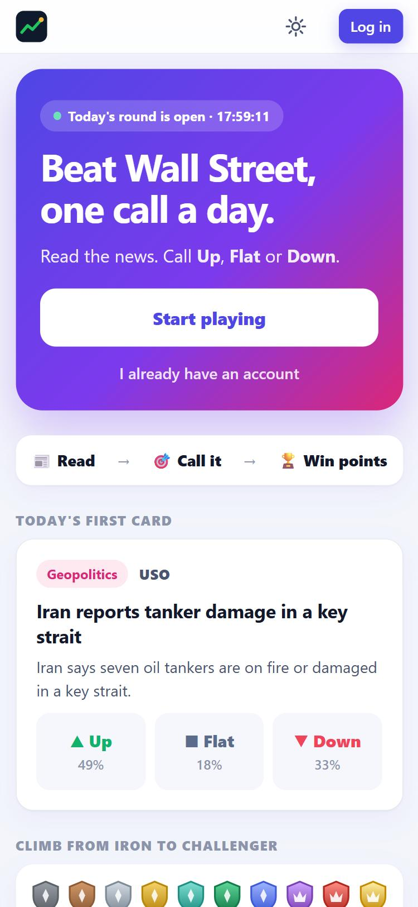

Beating the
Wall Street
Read the news. Call Up, Flat or Down. Beat the crowd.
Youngjin Hahm · MGT 409 Final Project · Oct 2026
GitHub: https://github.com/youngjinhahm-yale/beating-the-wall-street
Public repo
Retail investors never build a learning curve
- We trade on headlines and gut feeling
- No record of why → a win teaches nothing, a loss is "bad luck"
- Institutions write rules, review outcomes, improve
- Studying alone is passive — most people quit
30–60 min
of daily news reading that never becomes a reusable lesson (my own habit)
What is new
- Commit before the outcome — bets lock at 9:25 AM ET, settle on the real open→close
- Crowd odds — parimutuel payouts: beating the crowd pays more
- Tiers per news type — Macro, Company, Geopolitics, Sector
- Scored rules — every lesson becomes a rule with a win rate
Compared with: Investopedia Simulator, Wall Street Survivor, Kalshi / Polymarket, Robinhood, Stocktwits, newsletters, ChatGPT.
6 agents, code runs the schedule
{{DIAGRAM}}
The app



One real run: the Fact-checker at work
Oct 22 → round for Oct 23
- 259 headlines → 40 (code pre-filter)
- Scout: 4 events (Iran tankers, Meta, chips, Tesla)
- Editor wrote "Meta shares fell 7%…"
- Fact-checker: 2 of 4 failed — direction hints
- Editor retry → both pass → published
$0.0029 · 14.5k tokens in

Cost to run (measured)
${{MORNING_COST}}per morning run
${{DAY_COST}}shared cost per trading day
${{COST_10K}}/mofor 10,000 players
- Code pre-filter, prompt caching, shared explanations, zero-token game logic
- A/B: pre-filter cut cost with no drop in Fact-checker pass rate
{{CALLS}} real calls logged in llm_calls; gpt-6-luna course prices.
Safety: {{RT_PASSED}}/{{RT_TOTAL}} attacks stopped
- Injection in posts → code filter + Moderator
- Injection in news → quarantine + tool-less agents
- Invented facts / answer leaks → Fact-checker ({{FC_PCT}}% of drafts failed)
- Runaway agents → max 8 calls per run
- Overspending → daily token caps; game keeps working
- Late bets → server-side 9:25 lock

Impact
{{ROUNDS}}real rounds, {{FIRST}} → {{LAST}}
{{DRV_ELSE}}/{{DRV_TOTAL}}moves driven by something other than the card's news
~5 mindaily briefing vs 30–60 min of reading
Real users: {{PILOT_TEXT}}
What's next
- Host it + reminders at 6:00 AM and 4:15 PM
- Private leagues for clubs and friends
- "Your pattern" bias insights
- Swipe to bet, weekly seasons
Clone: https://github.com/youngjinhahm-yale/beating-the-wall-street
Public repo · run with python run.py
Education only, not investment advice